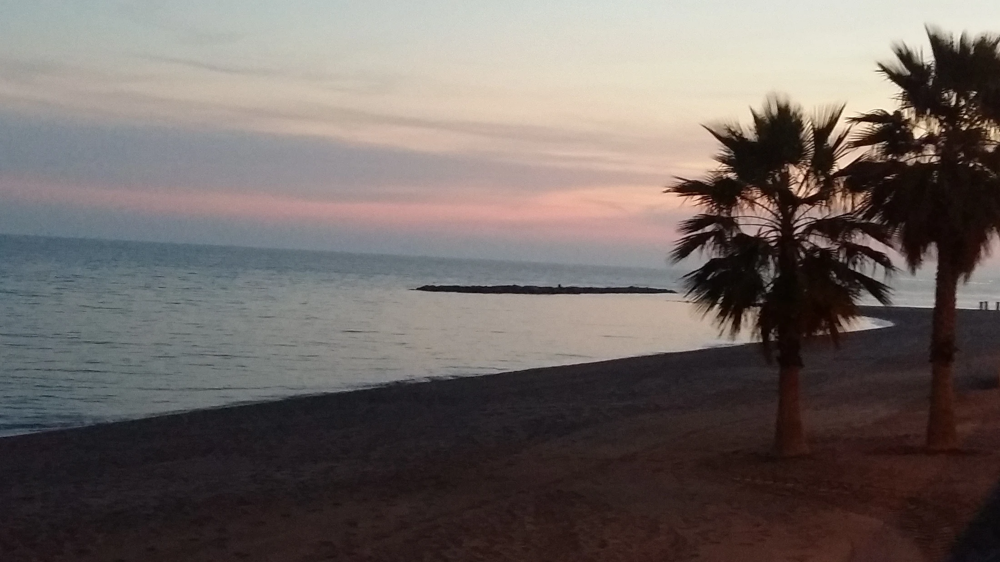
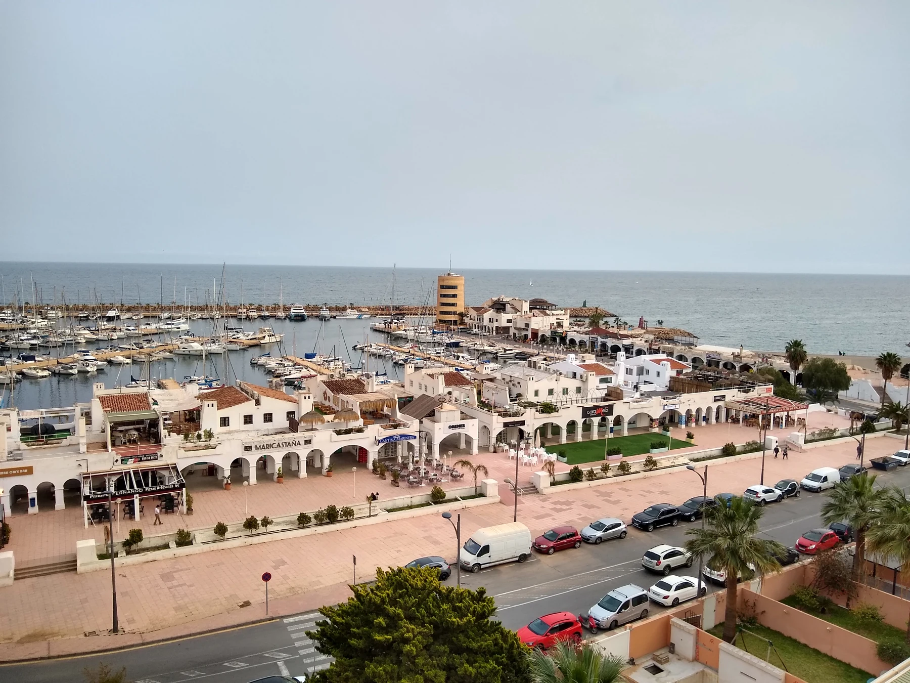
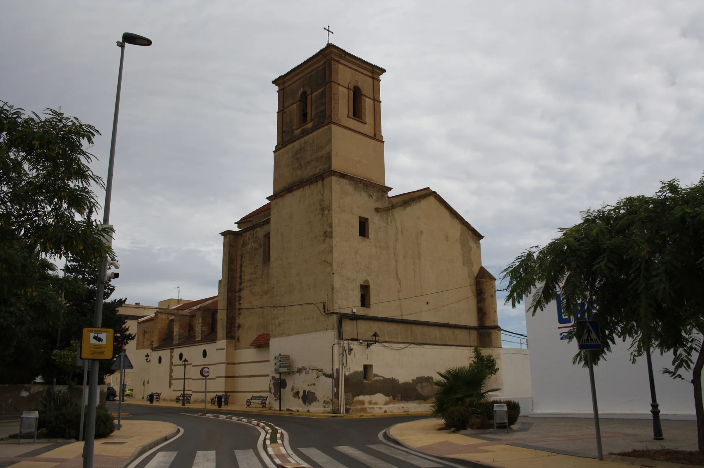

Oración
Escuchar la Palabra, encontrarnos con Cristo y dar a la Eucaristía su lugar central en la vida cristiana.

SAN INDALECIO · SIETE VARONES APOSTÓLICOS · IGLESIA EN MISIÓN
Una tierra que recuerda a sus apóstoles.
Una comunidad llamada a anunciar a Cristo.
NUESTRA RAZÓN DE CAMINAR
Almería, puerto de fe nace con una vocación católica: poner la memoria apostólica al servicio de la evangelización y de las comunidades que hoy viven y transmiten la fe. Queremos caminar con las parroquias, escuchar a la Iglesia diocesana y acoger a quienes buscan a Dios.
Escuchar la Palabra, encontrarnos con Cristo y dar a la Eucaristía su lugar central en la vida cristiana.
Caminar con la Iglesia: familias, sacerdotes, vida consagrada, hermandades y comunidades parroquiales.
Transmitir la fe y hacerla visible en la acogida, el servicio y el cuidado de quienes más lo necesitan.
LA COMUNIDAD CATÓLICA, EN EL CENTRO
La memoria apostólica cobra sentido cuando da fruto hoy: una parroquia que acoge, una familia que transmite la fe, un joven que descubre su vocación o una comunidad que acompaña a quien está solo.
Proponer tiempos de oración, escucha del Evangelio y participación en la vida sacramental de las parroquias, con su acompañamiento pastoral.
Preparar encuentros para familias, catequistas y jóvenes en torno a San Indalecio, el testimonio apostólico y la misión de la Iglesia.
Vincular el camino a un gesto de servicio definido con la comunidad anfitriona: acompañar, escuchar y responder a necesidades concretas.
01 — EL ORIGEN
Recibir el Evangelio.
Vivirlo. Anunciarlo.
La tradición cuenta que Torcuato, Tesifonte, Indalecio, Segundo, Eufrasio, Cecilio y Hesiquio fueron enviados desde Roma para anunciar el Evangelio en Hispania.
La tradición de los Siete Varones Apostólicos nos recuerda una vocación que sigue viva: anunciar a Jesucristo. Conocer sus fuentes y su contexto permite transmitir esta memoria con fidelidad espiritual y rigor histórico.
Conocer las fuentes ↗
AGUADULCE · TURANIANA
Imaginamos ese primer paso junto al mar de Aguadulce. El cercano yacimiento de la Ribera de la Algaida o Turaniana, protegido como Bien de Interés Cultural, nos acerca a la historia de este litoral.
La arqueología ofrece contexto; el desembarco de los siete en este punto continúa siendo una cuestión por investigar. Desde esta costa proponemos abrir un camino de patrimonio, acogida y oración.
Descubre la comunidad ↓02 — EL CAMINO
El territorio puede convertirse en ocasión de oración, catequesis y encuentro comunitario. Estos lugares inspiran un itinerario pastoral todavía en estudio.
Mapa conceptual, sin escala. Conexiones propuestas, no ruta señalizada ni trazado histórico acreditado.
AGUADULCE · TURANIANA
Un comienzo junto al Mediterráneo para conocer el pasado de Turaniana y dejar que el silencio abra espacio a lo esencial.
¿Qué esperanza quieres llevar contigo?
Itinerario en estudio. Las etapas, los accesos y la acogida se definirán con especialistas, comunidades locales y las diócesis implicadas.
SIETE VARONES APOSTÓLICOS
La tradición recuerda a siete evangelizadores que compartieron una misión: anunciar el Evangelio. Su memoria invita hoy a nuestras comunidades a renovar su vocación apostólica.
Acci · Guadix
Vergi · Berja
Urci · entorno de Pechina
ALMERÍAAbula · vinculada con Abla
Iliturgi · tradición de Andújar
Iliberri · Elvira / Granada
Carcere · ubicación discutida
Identificaciones tradicionales; algunas equivalencias entre sedes antiguas y localidades actuales siguen siendo discutidas.

03 — CON LA IGLESIA DE ALMERÍA
La Iglesia de Almería reconoce en San Indalecio a su fundador según la tradición. Pechina mantiene viva esta devoción, cuya fecha de referencia es el 15 de mayo.
El corazón de esta propuesta está en la comunidad católica: la vida de las parroquias, el testimonio de las familias, la vocación de los jóvenes y el servicio de sacerdotes y personas consagradas. Su desarrollo pastoral se plantea al discernimiento de la Iglesia diocesana.
Un momento para la oración ↗HAZ SILENCIO. ESTÁS EN CAMINO.
Por nuestra diócesis, sus pastores y cada comunidad que anuncia el Evangelio.
Señor Jesucristo,
tú enviaste a tus apóstoles
a anunciar el Evangelio a todos los pueblos.
Renueva la fe de nuestra Iglesia de Almería.
Sostén a nuestro obispo, a los sacerdotes,
a la vida consagrada y a todas nuestras familias.
Que tu Palabra ilumine nuestros pasos,
que la Eucaristía alimente nuestra comunión
y que tu amor se haga servicio a los más necesitados.
Por intercesión de San Indalecio,
haznos una comunidad que acoge,
una Iglesia que escucha y un pueblo que evangeliza.
Amén.
Oración original propuesta para esta iniciativa.04 — UNA PROPUESTA AL SERVICIO DE LA IGLESIA
Una iniciativa de inspiración católica que desea ponerse al servicio de la Iglesia. El siguiente paso es presentar la propuesta a la diócesis, escuchar a las parroquias y valorar juntos su sentido pastoral.
Presentar la propuesta al obispado y revisar su fundamento histórico y pastoral. Escuchar a sacerdotes, comunidades parroquiales y especialistas.
Diseñar materiales de catequesis, una experiencia accesible de peregrinación y una acogida coordinada con las parroquias participantes.
Proponer una jornada piloto de oración, formación y servicio. Evaluar si ayuda a vivir la fe, fortalecer vínculos y atender necesidades reales.
ALMERÍA, PUERTO DE FE
El dossier presenta la visión pastoral, el fundamento del relato y los pasos que proponemos al obispado para su valoración.
PARA CONSTRUIR JUNTOS
COMUNIDADES Y FAMILIAS
Una guía de encuentro, oración y servicio para conversar con tu comunidad.
Abrir la guía ↗OBISPADO Y AGENTES DE PASTORAL
Visión pastoral, cuestiones por revisar y una hoja de ruta para valorar la iniciativa.
Consultar el dossier ↗MEDIOS DE COMUNICACIÓN
Una ficha informativa con el enfoque católico, el contexto y el estado de la propuesta.
Ficha para medios ↗FE Y RIGOR, EN EL MISMO CAMINO
Respetamos el valor espiritual del relato y distinguimos lo documentado de lo que requiere investigación. La propuesta no cuenta con aprobación diocesana ni supone el reconocimiento de una ruta oficial.
Las fuentes consultadas no acreditan el desembarco en Aguadulce ni el trayecto por Dalías y La Ragua. Los milagros y el origen en el siglo I se presentan como tradición religiosa. El patrimonio romano no prueba la presencia de los misioneros. El Indalo se entiende como contexto cultural, sin atribuirle un origen cristiano ni presentar etimologías populares como hechos comprobados.
Revisión editorial: octubre de 2026.